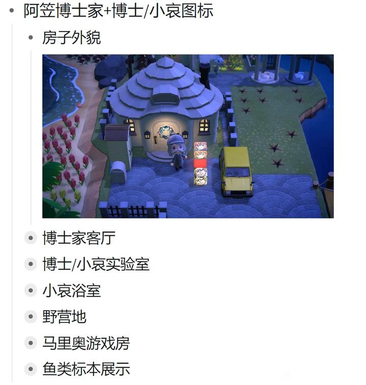
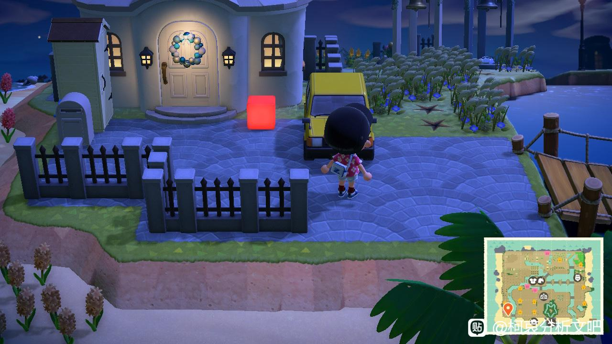

图一是以前的样子
图二是刚刚去看到了
找了一圈也没在其它地方看到
不知道怎么回事
图二是刚刚去看到了
找了一圈也没在其它地方看到
不知道怎么回事


应该是在移位置吧，总不能删了吧
2024-09-17 23:44 | 一介闲散℃:好像是是在演m27最后一格，所以哀和博士在热气球上
出门了？不会带着孩子们去大阪了吧。
之前动森好像有提到小哀也想去平和表白的楼。
之前动森好像有提到小哀也想去平和表白的楼。
2024-09-17 20:13 | 🌐之徙:但是车还在，也许坐新干线去的？2024-09-17 22:41 | Ryzen◆:也可能是m28 出门去了长野群马
这个灯也会暗示剧情吗？
有没有之前关注过动森的帮忙科普下？
有没有之前关注过动森的帮忙科普下？
2024-09-17 21:50 | 櫻井青城:前一段有按照M27的剧情摆过
来个动森大佬再对比下别的
这个灯是在暗示这个屋里有没有人吗
2024-09-17 22:18 | sky跳跳11:不是哦 这个屋里npc是进不去的 以前一直都有灯的
3
盲猜m28小哀和博士出门了
🤔🤔
或许是设计格子不够用了？ 因为动森设计格子有上限的，设计图案满了的话必须删掉旧的设计才能画新的。
因为动森设计格子有上限的，设计图案满了的话必须删掉旧的设计才能画新的。
因为动森设计格子有上限的，设计图案满了的话必须删掉旧的设计才能画新的。2024-09-17 22:45 | 生抽不好喝:设计格子图案变化，会自动覆盖到已装饰的物品，所以是想要画新的图案需要格子了，只能把装饰物收起来了2024-09-18 00:25 | sky跳跳11:不会 在之前2024电影的预热的那个地下室里还有小哀的这个图
场外信息不好说 指不定上周玩的时间少了干啥活没干完
指不定上周玩的时间少了干啥活没干完
指不定上周玩的时间少了干啥活没干完
应该是联动m28剧情，博士和小哀出门了。
同理你可以看到小兰的房子外面小兰的头像也没有了。只有安室的头像在（因为小兰家一楼是波罗咖啡厅）
同理你可以看到小兰的房子外面小兰的头像也没有了。只有安室的头像在（因为小兰家一楼是波罗咖啡厅）
插眼跟踪动森
青山喜欢用动森在剧场版上映后把剧场版演一遍
这里表示哀、**、少侦他们在M27去北海道旅游了
兰和福城圣在一起所以现在对应平和告白那个场景
这里表示哀、**、少侦他们在M27去北海道旅游了
兰和福城圣在一起所以现在对应平和告白那个场景
2024-09-18 08:21 | jazzyjing:这个比较准确，是在复盘m27的剧情，还没到28的预热。

在平和告白的地方上面，正在演m27结尾呢
出门了草 那岛上有热气球吗
大胆猜测他们搬家了
大佬赶紧来推理
小哀和博士的灯钻不见很久了，m27期间就不在，应该是像上面说的设计格子有上限，m27多了伊红圣这些，就把小哀博士的暂时删了
退场暗示？